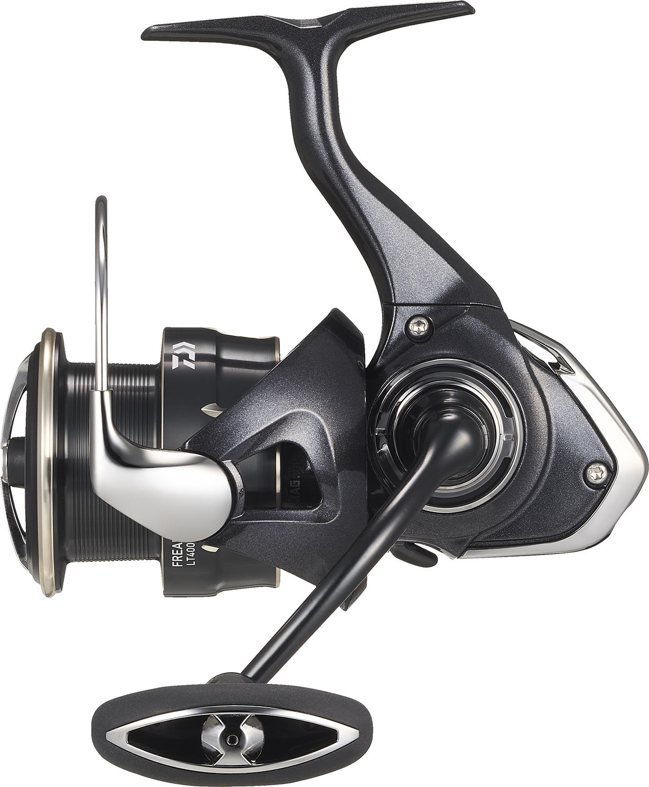

ReelCalc Reel Setup Guide
Daiwa Freams LT 2026 LT4000-C Line Capacity & Reel Setup Guide
For steady seabass retrieves and light shore jigging, the Daiwa Freams LT 2026 LT4000-C pairs 5.2:1 gearing with a listed 32.3-inch retrieve per turn at full spool. The hollow-pipe AIRDRIVE bail guides line toward the roller, and ATD TYPE-L provides responsive drag startup when a fish takes line. The calculator below is already set to this reel, whether you want a full spool of main line or backing under a working section.